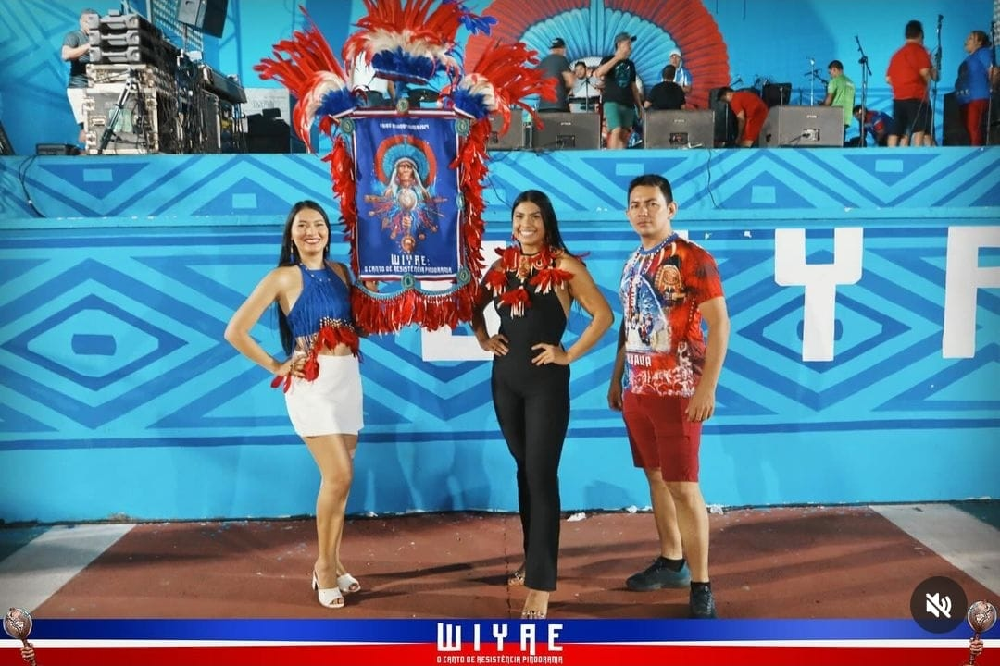

Festival Folclórico
O Festival é uma herança do Festival Folclórico de Juruti, que inspira a criatividade das apresentações. As tribos indígenas contam com mais de 800 apresentações, mostrando as suas mais tradicionais artes, desde danças e peças teatrais até a confecção de peças e artigos de artesanato em palha e cânhamo.
Muirapinima x Munduruku
As duas tribos competem em uma disputa vibrante pela conquista do título. A festa é um verdadeiro banquete cultural com música, dança, arte indígena e cantos que retratam a riquíssima e o modo de vida indígena.
Avaliação das Apresentações
A competição é avaliada por uma comissão externa, formada por profissionais de outras regiões do país, que julgam a letra, música, ritmo, significado da história, figurinos e outros aspectos de apresentação.